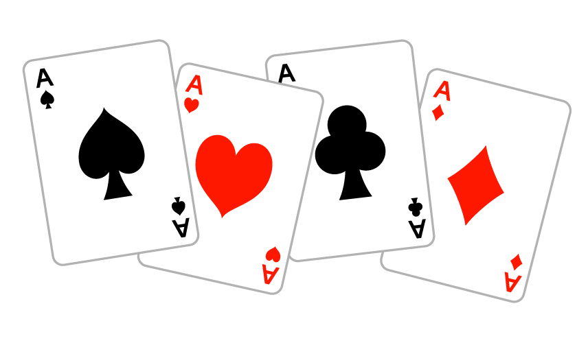

Joker with Magic のルール説明
ゲームの概要

「Joker with Magic」とは、誰しもが1度は遊んだことがあるであろうトランプゲームの「ババ抜き」を基に作成したゲームです。 そのため、基本的な流れはババ抜き同様、自分のターンに相手の手札からカードを引き、同じ数字のカードがそろえば手札から捨てるという感じです。 ただ、本ゲームは2人プレイです。その上、ジョーカーを除いた全てのカードに魔法効果が付与され、それと同時に、トランプに本来記されている数字もカード名に変更されています。 「Joker with Magic」では、この"魔法の効果"を理解し、早急に状況判断をする能力が求められます。
ゲームの流れ
- 始めにカードを配布し、引く順番を決めます。
- 次に、手札に同じ名前のカードがある場合は、そのカードを2枚とも捨てます。
- 手札が整ったら、順番に従って次の人のカードを引き始めます。
- カードを引いた際にカードがそろった場合は、そのカードを2枚とも捨てます。
- カードを捨てる際、防御魔法カード以外の魔法カードは効果を発揮します。
(防御魔法は1枚で効果を発揮し、魔法カードの効果対象になった際にその効果を発動します。発動しても、手札から捨てません。) - 同様にターンを進めていき、基本的には最後にジョーカーを持っていた人の負けです。しかし、Declareの効果により宣言したターン数丁度でゲームが終了した場合は、たとえジョーカーを所持していたとしても勝利します。